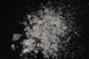

|
|
(For further information on spectroscopy, see:
http://speclab.cr.usgs.gov)
TITLE: Phlogopite GDS20 DESCRIPT
DOCUMENTATION_FORMAT: MINERAL
SAMPLE_ID: GDS20 (NMNH124158)
MINERAL_TYPE: Phyllosilicate
MINERAL: Phlogopite (Mica group)
FORMULA: KMg3Si3AlO10(F,OH)2
FORMULA_HTML: KMg3Si3AlO10(F,OH)2
COLLECTION_LOCALITY: Burgess, Ontario (Cp sample)
ORIGINAL_DONOR: Bruce Hemingway
CURRENT_SAMPLE_LOCATION: USGS Denver Spectroscopy Laboratory
ULTIMATE_SAMPLE_LOCATION: USGS Denver Spectroscopy Laboratory
SAMPLE_DESCRIPTION:
Form series with Biotite.
Sieve interval: coarse
IMAGE_OF_SAMPLE:

END_SAMPLE_DESCRIPTION.
XRD_ANALYSIS:
"Unit cell parameters are: a = 0.531+/-0.002 nm, b = 0.922+/-0.003 nm, c = 1.022+/-0.003 nm, and beta = 100.00+/-0.03°, and the structure type is 1M (M.R. Ross, U.S. Geol. Survey, personal communication, 1982) determined by single crystal methods."
Robie, R.A. and Hemingway, B.S., 1984, Heat capacities and entropies of phlogopite (KMg3[AlSi3O10](OH)2) and paragonite (NaAl2[AlSi3O10](OH)2) between 5 and 900 K and estimates of the enthalpies and Gibbs free energies of formation. American Mineralogist, v. 69, pp.858-868.
END_XRD_ANALYSIS.
COMPOSITIONAL_ANALYSIS_TYPE: # XRF, EM(WDS), ICP(Trace), WChem
| COMPOSITION KEYWORD |
Oxide ASCII |
Amount | Weight Percent, % |
Oxide html |
|---|---|---|---|---|
| COMPOSITION: | SiO2 | 40.3 | wt% | SiO2 |
| COMPOSITION: | TiO2 | 1.32 | wt% | TiO2 |
| COMPOSITION: | Al2O3 | 14.3 | wt% | Al2O3 |
| COMPOSITION: | Fe2O3 | .63 | wt% | Fe2O3 |
| COMPOSITION: | FeO | 1.11 | wt% | FeO |
| COMPOSITION: | MnO | .03 | wt% | MnO |
| COMPOSITION: | MgO | 26.4 | wt% | MgO |
| COMPOSITION: | BaO | .16 | wt% | BaO |
| COMPOSITION: | CaO | lt.07 | wt% | CaO |
| COMPOSITION: | Na2O | .43 | wt% | Na2O |
| COMPOSITION: | K2O | 10.1 | wt% | K2O |
| COMPOSITION: | F | 3.2 | wt% | F |
| COMPOSITION: | H2O+ | 2.63 | wt% | H2O+ |
| COMPOSITION: | H2O- | .91 | wt% | H2O- |
| COMPOSITION: | Total | 101.59 | wt% | |
| COMPOSITION: | O=Cl,F,S | 1.34 | wt% | #correction for Cl, F, S |
| COMPOSITION: | New Total | 100.25 | wt% |
Rapid rock analysis from:
Robie, R.A. and Hemingway, B.S., 1984, Heat capacities and entropies of phlogopite (KMg3[AlSi3O10](OH)2) and paragonite (NaAl2[AlSi3O10](OH)2) between 5 and 900 K and estimates of the enthalpies and Gibbs free energies of formation. American Mineralogist, v. 69, pp.858-868.
COMPOSITION_TRACE:
COMPOSITION_DISCUSSION:
END_COMPOSITION_DISCUSSION.
MICROSCOPIC_EXAMINATION:
END_MICROSCOPIC_EXAMINATION.
SPECTROSCOPIC_DISCUSSION:
END_SPECTROSCOPIC_DISCUSSION.
SPECTRAL_PURITY: 1b2b3b4b # 1= 0.2-3, 2= 1.5-6, 3= 6-25, 4= 20-150 microns
| LIB_SPECTRA_HED: | where | Wave Range | Av_Rs_Pwr | Comment |
|---|---|---|---|---|
| LIB_SPECTRA: | splib04a r 3862 | 0.2-3.0µm | 200 | g.s.= |
| LIB_SPECTRA: | splib05a r 5388 | 0.2-3.0µm | 200 | g.s.= |
| LIB_SPECTRA: | splib06a r 17614 | g.s.= | ||
| LIB_SPECTRA: | splib06a r 17628 | g.s.= |
{kind=link}